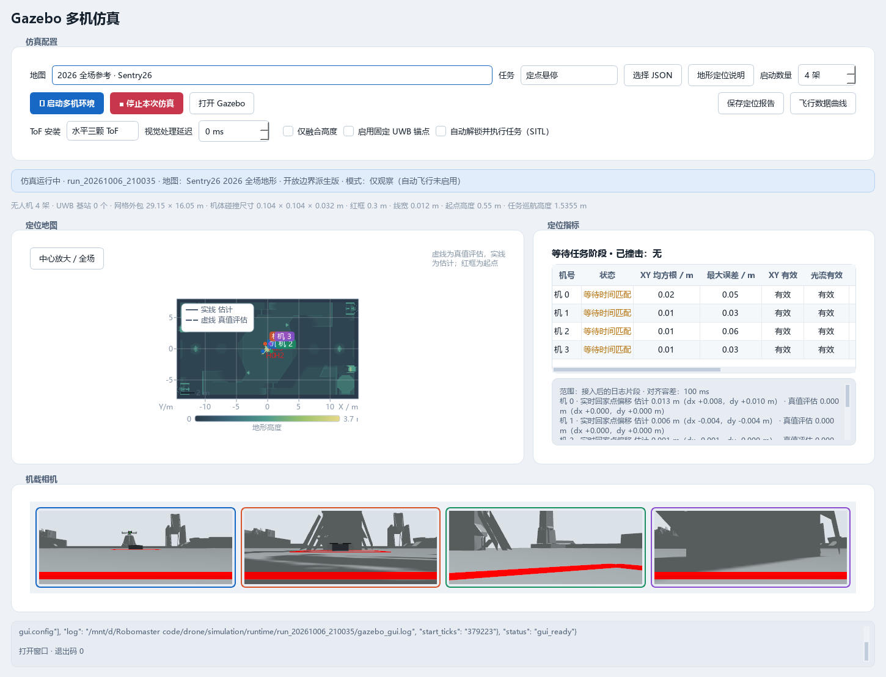
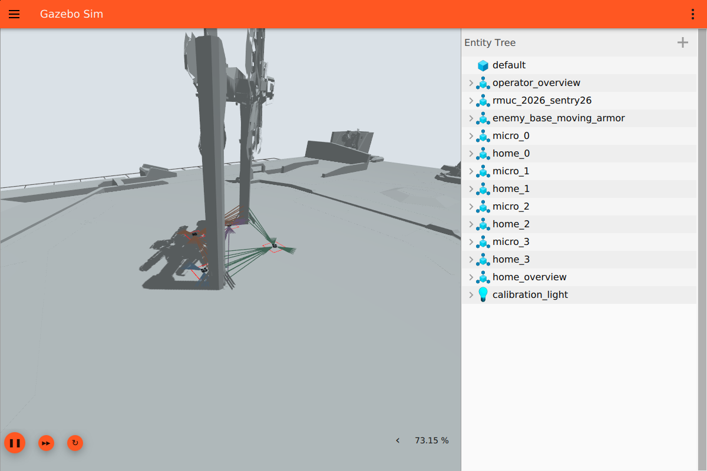
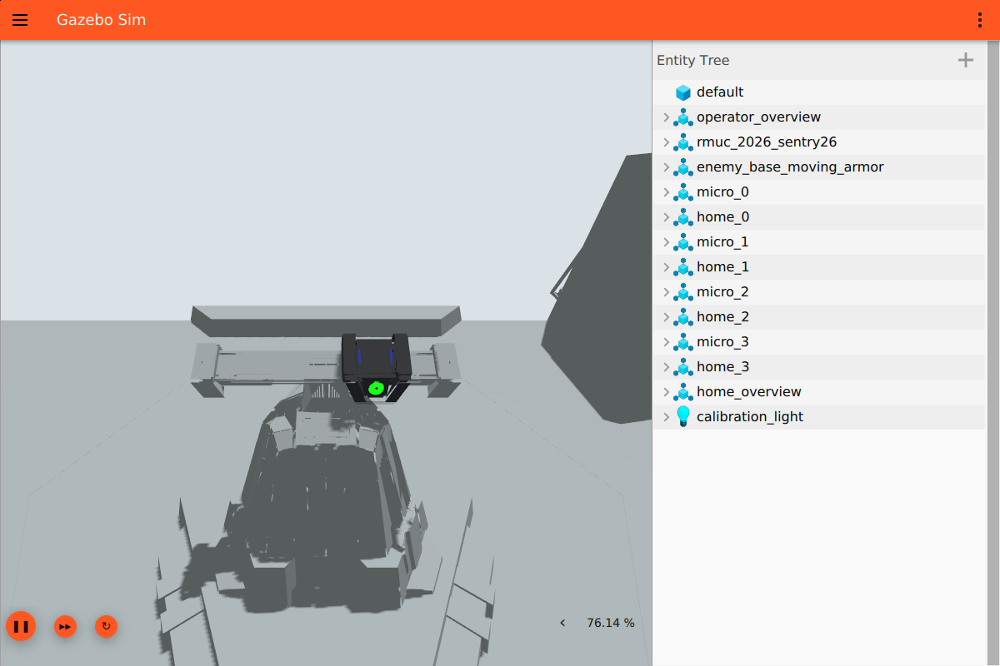

Gazebo 画面 ToF 射线与基地靶板改动说明
实验台启动和重开 Gazebo 使用统一的场景配置与通信分区。ToF 射线由真实深度数据驱动，在 3D 窗口显示。基地顶部靶板依据 RMUC 2026 V2.2.0 规则手册恢复为原滑轨上的飞镖检测模块。
画面与启动
| 问题 | 修复 |
|---|---|
| 启动命令未加载项目的 GUI 配置，窗口缺少预设视图与标记管理器。 | 启动及“打开 Gazebo”统一传入 simulation/gui.config，加载 MinimalScene、场景管理器、MarkerManager、世界控制和实体树。 |
| 旧 GUI 可独立于服务器残留，重开时使用默认分区。 | 每次运行建立独立 GZ_PARTITION，保存资源路径；重开从运行记录恢复，复用现有窗口或启动新窗口，并纳入停止管理。 |
| 离屏 Qt 环境会影响可见窗口。 | GUI 使用可用显示后端，WSLg 优先采用 XCB；离屏设置被替换。缺少显示服务时明确报错。 |
| Windows 读状态文件与 WSL 原子替换发生短暂共享冲突。 | manager.json 写入使用独立临时文件，替换失败短暂重试；启动异常从内存进程清单清理，不依赖再次写入状态。 |
| 仅靠 PID 无法确认 3D 场景就绪，错误还会被刷新覆盖。 | 校验世界列表和 /marker/list 服务；错误保留到下一次管理操作，日志提供具体原因。 |

ToF 射线
Gazebo 8 的 MarkerManager 通过 /marker 服务接收绘制请求；同名话题用于输出标记更新。可视化插件已改为调用服务，无有效测量时发送删除请求，避免显示旧射线。深度读取按 Image.step 处理每行字节数，兼容带行填充的数据。
每架飞机的三颗 8×8 ToF 最多绘制 192 条有效射线。射线起点使用传感器安装外参，终点使用轴向深度、像素方向和飞机姿态计算；各机颜色不同。标记只进入 GUI，机载相机与 ToF 深度图不包含这些辅助线。

基地靶板与规则依据
依据《RoboMaster 2026 机甲大师超级对抗赛比赛规则手册 V2.2.0（20260807）》第 4.2.2 节、图 4-13，基地顶部为飞镖检测模块，包含小装甲模块、飞镖检测传感器和绿色引导灯。图 5-17 的白色基地标志对应主体装甲模块。顶部滑台恢复黑色壳体、两条蓝色灯条和下方绿灯。
| 项目 | 设置 | 依据 |
|---|---|---|
| 模块外形 | 保留原 Sentry26 网格与滑轨，原件共 1,062 个三角面。 | 图 4-13 标注模块宽 242 mm、局部高度 239 mm；原网格保留安装突出部位。 |
| 绿灯 | 原壳体表面上的约 55 mm 直径发光区。 | 印刷第 40 页，第 4.2.2 节。 |
| 滑轨范围 | 世界 Y 轴 −280 mm 至 +280 mm。 | 印刷第 116 页，第 5.6.5 节。 |
| 灯条 | 高 55 mm、宽 5 mm、中心间距 116 mm。 | 按原小装甲面设置的视觉尺寸；材质和 PnP 参数一致。 |
| 搜索位置 | (11.58410, 0.001205, 1.52464) m。 | 原小装甲面中心、滑轨零位；世界坐标。 |
| 运动方式 | 0.2 m/s 匀速往返。 | 算法验证参数；正式比赛的随机移动由飞镖事件触发。 |
蓝色材质由壳体轮廓移回小装甲板正面。三角面裁分只改变材质区域，不增加独立板体或轨道；分色前后表面面积一致。小装甲正面碰撞体与壳体碰撞体分开，只有前者触发 armor_pressure。静态定位地图继续排除移动滑台。
视觉配对依据灯条宽高比识别明显的透视缩短，在这种情况下把灯条夹角上限从 20° 调整为 45°。灯条间距、长度相似性与 PnP 重投影筛选保持有效。测试覆盖 62.5° 斜视、0.4–1 m 距离和 ±10° 图像内旋转。

验证与使用
实验台按钮启动、复用窗口、关闭 GUI 后重新打开均已验证；四路相机更新，MarkerManager 返回四个机号的射线标记。完整启动测试中四机已起飞并到达基地附近。Python 回归为 261 项通过、1 项跳过；Gazebo 插件测试 2 项通过，伴随端 C++ 测试 12 项通过。
修正后的小装甲面较小且倾斜，沿原水平接近路线时，滑台壳体会遮挡近距离灯条。当前模型修复验证包括显示、结构、运动范围、视觉尺寸和触压区域；完整四机撞击成功率与返航需要按新靶面重新验收。此前大面积壳体靶板的命中结果不用于这份模型。
- 重开实验台，在 Gazebo 页选择地图和机数。
- 点击“启动多机环境”，Gazebo 打开场地；检查每机相机和 ToF 射线。
- 只关闭 Gazebo 窗口时，点击“打开 Gazebo”可连接当前运行；“停止本次仿真”结束整套进程。
- 更换地图或飞行参数前先停止，再启动新一轮。取消自动飞行可观察场景、传感器和定位数据。
代码位置
| 文件 | 职责 |
|---|---|
simulation/launch_linux.py | 分区、窗口配置、就绪检查、状态写入和进程清理。 |
app/simulation_panel.py | 操作反馈与错误保持。 |
simulation/gazebo/src/tof_ray_visualizer.cc | 深度转换及 GUI 标记请求。 |
simulation/base_mesh.py、moving_armor.py | 原网格分色、小装甲触压区域和滑轨关节。 |
simulation/original_armor_faces.json、地图 JSON | 原面索引、目标外参、灯条尺寸和行程。 |
scripts/verify_gazebo_gui.py | 通过真实实验台按钮验证启动、重开与相机显示。 |